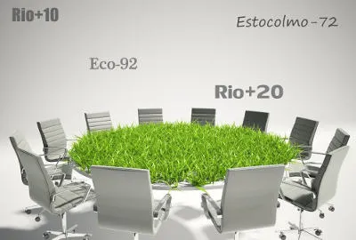

conferências ambientais
As conferências ambientais da ONU (Organização das Nações Unidas) têm desempenhado um papel crucial na promoção da sustentabilidade e na proteção do meio ambiente global. Estas conferências reúnem líderes mundiais, cientistas, ONGs e outros stakeholders para discutir e formular políticas e ações ambientais. A seguir, estão algumas das principais conferências ambientais da ONU:
Conferência de Estocolmo (1972) - Nome Completo: Conferência das Nações Unidas sobre o Meio Ambiente Humano - Local: Estocolmo, Suécia - Principais Resultados: - Primeira conferência internacional a colocar questões ambientais na agenda global. - Estabelecimento do Programa das Nações Unidas para o Meio Ambiente (PNUMA). - Declaração de Estocolmo, que incluiu 26 princípios sobre meio ambiente e desenvolvimento humano.
Conferência do Rio (1992) - Nome Completo: Conferência das Nações Unidas sobre Meio Ambiente e Desenvolvimento (Rio-92 ou ECO-92) - Local: Rio de Janeiro, Brasil - Principais Resultados: - Agenda 21, um plano de ação para o desenvolvimento sustentável global. - Convenção-Quadro das Nações Unidas sobre Mudança do Clima (UNFCCC). - Convenção sobre Diversidade Biológica (CBD). - Declaração do Rio sobre Meio Ambiente e Desenvolvimento. - Declaração de Princípios sobre Florestas.
Cúpula do Milênio (2000) - Local: Nova York, EUA - Principais Resultados: - Estabelecimento dos Objetivos de Desenvolvimento do Milênio (ODM), que incluíam metas ambientais.
Cúpula Mundial sobre Desenvolvimento Sustentável (Rio+10) (2002) - Local: Joanesburgo, África do Sul - Principais Resultados: - Avaliação dos progressos desde a Rio-92. - Foco em questões de água, saneamento, energia, saúde e biodiversidade.
Conferência Rio+20 (2012) - Nome Completo: Conferência das Nações Unidas sobre Desenvolvimento Sustentável - Local: Rio de Janeiro, Brasil - Principais Resultados: - Documento final "O Futuro que Queremos". - Lançamento do processo para desenvolver os Objetivos de Desenvolvimento Sustentável (ODS).
conferências da ONU sobre Diversidade Biológica (COP da CBD) - Principais Eventos: - COP1 (1995): Berlim, Alemanha. Primeiro encontro após a UNFCCC entrar em vigor. - COP3 (1997): Quioto, Japão. Protocolo de Quioto, que estabeleceu metas de redução de emissões para os países desenvolvidos. - COP21 (2015): Paris, França. Acordo de Paris, um compromisso global para manter o aumento da temperatura global abaixo de 2°C e perseguir esforços para limitá-lo a 1,5°C.
Conferências da ONU sobre Diversidade Biológica (COP da CBD) - Principais Eventos: - COP10 (2010): Nagoya, Japão. Protocolo de Nagoya sobre Acesso a Recursos Genéticos e a Partilha Justa e Equitativa dos Benefícios.
Conferências da ONU sobre Desertificação (COP da UNCCD) - Principais Eventos: - Reuniões regulares para abordar a desertificação, degradação do solo e seca.
Essas conferências representam apenas uma parte das numerosas reuniões e esforços contínuos da ONU para enfrentar os desafios ambientais globais. Cada uma dessas conferências contribuiu para a formação de políticas, acordos e práticas que visam promover o desenvolvimento sustentável e proteger o meio ambiente.